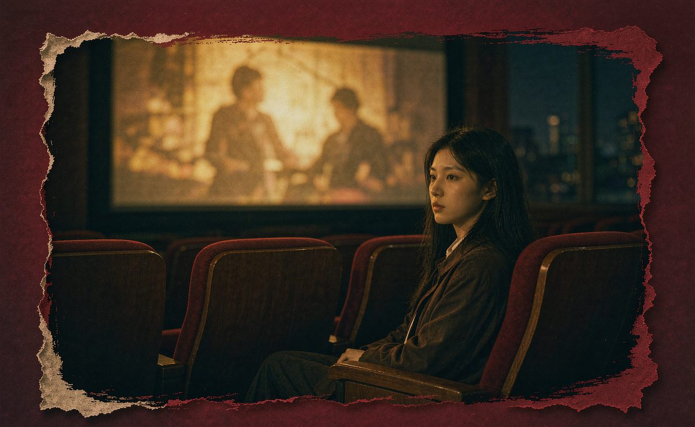
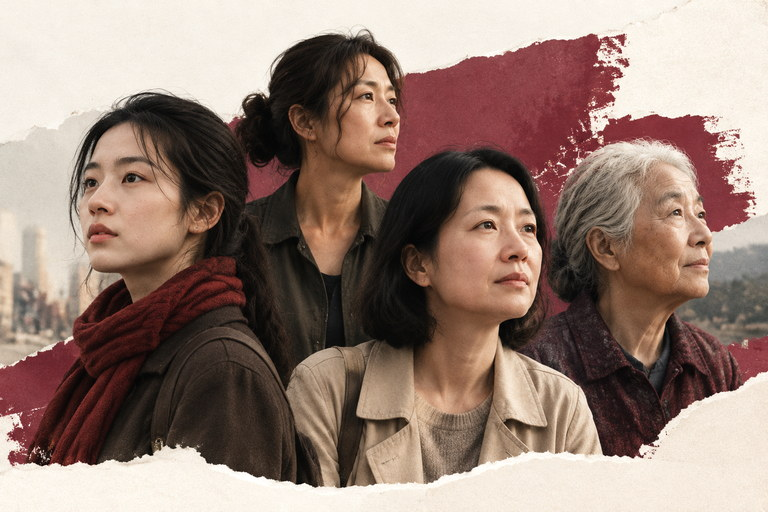

她的影单 Vol.01
Enola Holmes 三部曲：
Enola Holmes 三部曲：
她不是配角，她有自己的故事
当大家都在谈论 Sherlock Holmes 的聪明与传奇时，却常常忽略了他的妹妹——那个在家族中同样聪明、敏锐，也同样渴望自由的女孩。
阅读全文 →电影是入口，女性的真实处境
才是我们想讨论的事。
从银幕上的女性出发，讨论婚姻、生育、无偿照护、年龄偏见，以及一个人如何获得选择自己人生的权利。
阅读最新文章 →

当大家都在谈论 Sherlock Holmes 的聪明与传奇时，却常常忽略了他的妹妹——那个在家族中同样聪明、敏锐，也同样渴望自由的女孩。
阅读全文 →以上剧照为 Netflix 官方发布素材，版权归 Netflix 及相应权利人所有，仅作介绍性引用：第一部官方页 · 第二部官方页 · 第三部官方页